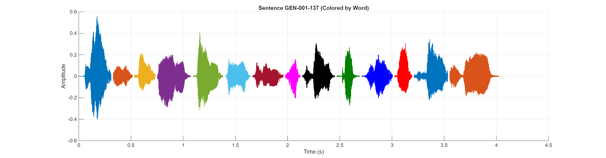

Sentence Audio:
Waveform:
| # | ID | Hanji | POJ |
|---|---|---|---|
| 1 | GEN-001-137-0002 | 我 | Góa |
| 2 | GEN-001-137-0003 | 有 | ū |
| 3 | GEN-001-137-0004 | 互 | hō͘ |
| 4 | GEN-001-137-0005 | 恁 | lín |
| 5 | GEN-001-137-0006 | 遍 | piàn |
| 6 | GEN-001-137-0007 | 地 | tōe |
| 7 | GEN-001-137-0008 | 上 | chiūⁿ |
| 8 | GEN-001-137-0009 | 一 | it |
| 9 | GEN-001-137-0010 | 切 | chhè |
| 10 | GEN-001-137-0011 | 結 | kiat |
| 11 | GEN-001-137-0012 | 子 | chí |
| 12 | GEN-001-137-0013 | 的 | ê |
| 13 | GEN-001-137-0014 | 菜 | chhài |
| 14 | GEN-001-137-0015 | 蔬 | soe, |